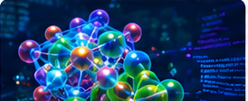
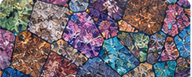
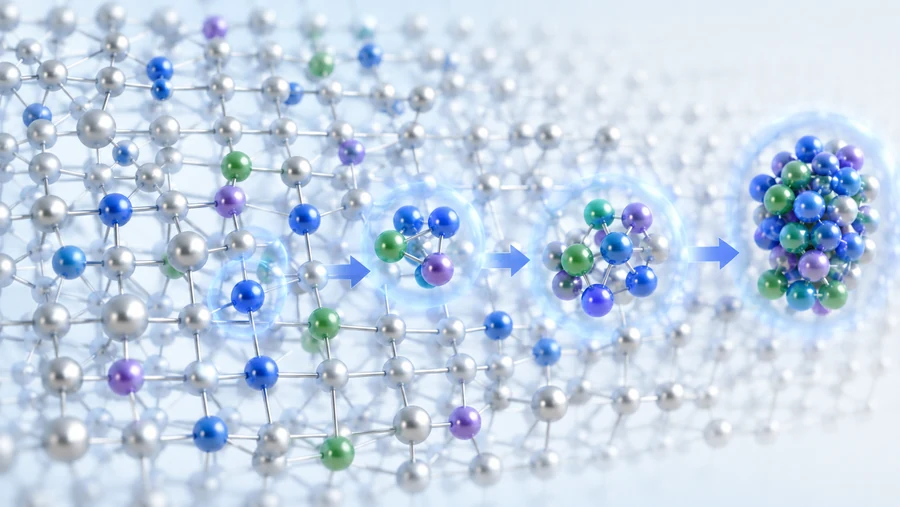
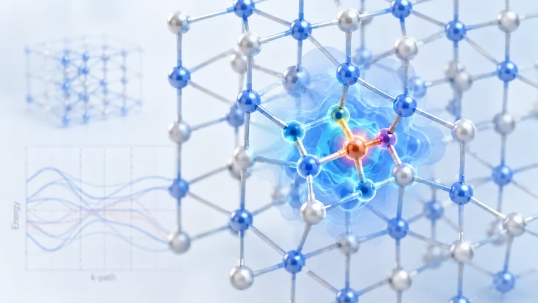

01
陽電子消滅法による
格子欠陥解析
陽電子寿命測定・ドップラー広がり測定により、空孔型欠陥や転位等の微細構造を高感度に評価します。
Research
当研究室では、陽電子消滅法を主軸とした先端的な材料解析技術により、金属・半導体材料の微細構造を原子レベルで解明しています。
Research Overview
電子の反物質である陽電子（ポジトロン）を利用することにより、材料の内部構造を原子サイズオーダで観察することができます。量子機能材料設計分野では自動車用アルミニウム合金や高強度鋼などの金属材料や、近年注目されている多種類の元素を均一に混合した高エントロピー合金や金属３Ｄプリンターで作製した合金などにおいて優れた特性が発現する機構を、主として陽電子を用いた実験および第一原理計算を用いたコンピュータ・シミュレーションにより解明し、新しい材料を設計するための研究を行っています。
図の項目にふれると説明が表示されます
Themes
当研究室における近年の主な研究テーマをご紹介します。
陽電子寿命測定・ドップラー広がり測定により、空孔型欠陥や転位等の微細構造を高感度に評価します。

02第一原理計算を用いて、欠陥生成や物性予測を行い、材料設計の指針を提供します。

03高エントロピー合金における局所構造と特性の相関を解明し、材料開発につなげます。
AM造形材に特有の欠陥や残留応力の評価を通じて、信頼性向上に貢献します。

05時効過程における溶質クラスタ形成挙動を実験と計算の両面から解析します。

06cBN中の複合欠陥の形成エネルギーや電子状態を計算し、物性への影響を評価します。